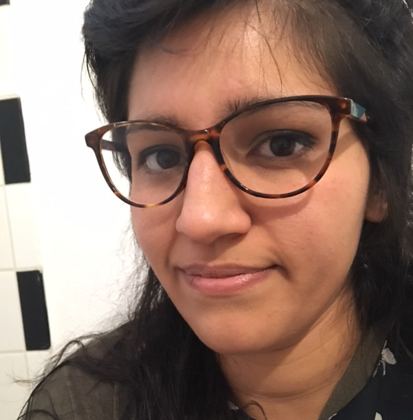
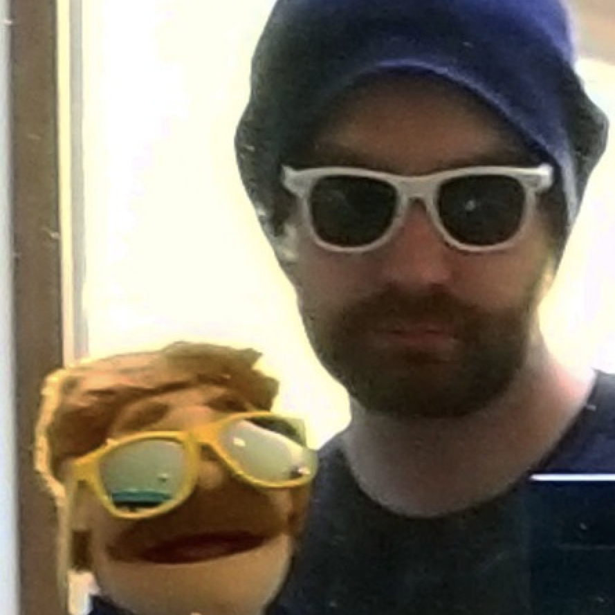
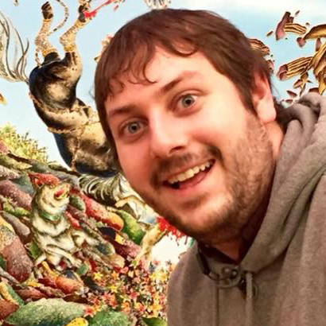

Long Form Improv Comedy
from Portland, Oregon
Upcoming Shows
Cast
Along with his improv experience, Sean is an aspiring actor and studied musician from Portland. Currently he is producing a serialized mystery podcast.
Sean
Abplanalp
Abplanalp

Drea is a 30 year old undergrad. She has studied improv for more than a few years at various theaters in Portland. Drea is inspired by multiple cultures, comedy, acrylic paint and butter!
Drea
Genoveva
Genoveva
Chelsea is a comedian, writer, and improviser. She's created dozens of memes for Cracked and wrote an article that was featured on their 'Viral' list. She's also performed at the HIGHlarious Comedy Festival.
Chelsea
Burns
Burns

Alex has been improvizing since May 2017 but is always doing creative things. He has been seen around Portland in Show Ridiculous, Secret Ardvark, the Mel-o Variety Show and his Youtube channel "Mr. Beeken."
@BeekenAlex
Alex
Beeken
Beeken
Tyler has 4 years of improvizing experience behind him. He has taken classes at the Brody, Curious and currently at Kickstand comedy.
Tyler
Havener
Havener

Justin is an Oregon born artist and improvizer. When he's not acting or producing podcasts, he's welding works of visual art.
Justin
Ulrich
Ulrich

Russ has been doing improv for 2 years. Find him running tech at the Ape theater, taking classes at Kickstand or online where he produces "HogCast Speedy Delivery" the world's only podcast about Sonic the Hedgehog and pizza.
Russ
Walsh
Walsh
Coach
Craig McCarty
Craig has been a fixture of the Portland and Chicago improv and sketch communities since 1999. He performed in Chicago with IO Harold team Chopper and was a member of Playground theater team The Fling, while somehow maintaining his career with ComedySportz-Portland. He also plays with the D&D homage The Minions.